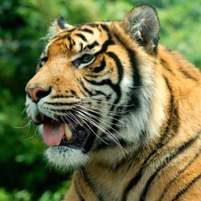

Information:

The Zoo is a free, family-focused zoo which has a small range of exotic and domestic animals and is recognised as one of the most progressive zoos in the world. There is lots to see and do all year, including events, eye-to-eye encounters, behind the scenes tours and more!Zoo experiences motivate children to care for the enviroment and this is especially important as they will be the caretakers of our precious biodiversity in the future.
The Zoo was started in 1965 by two very dedicated conservationists, and since that time we have been creating animal exhibits that not only emulate the animals' natural habitats but also provide spectators and visitors with excellent views of both the outdoor areas and the sleeping quarters.
Hours: We are open 9am to 5pm every day.
all public holidays including Christmas Day.
Facilities: Wheelchair and pushchair access, playground, sun shade, toilets and picnic tables.
The Zoo is a member of the International Zoo Educators Association http://www.izea.net/